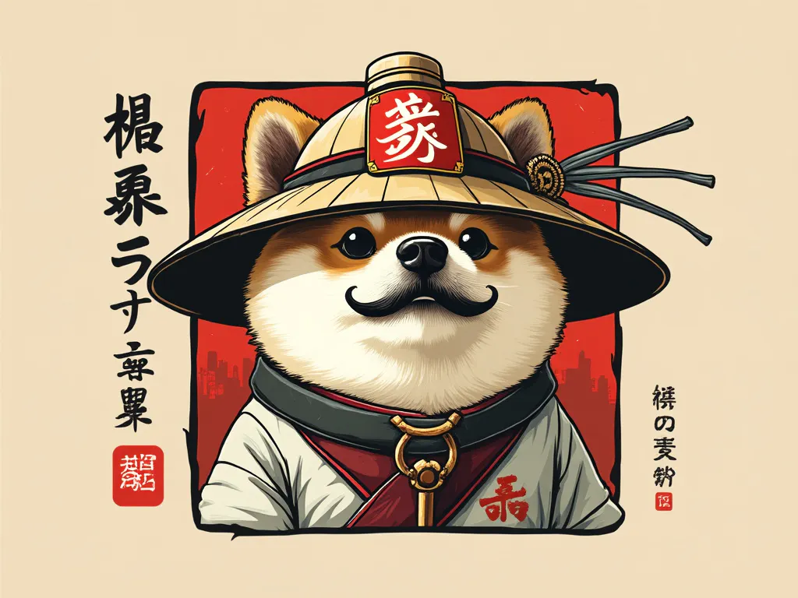
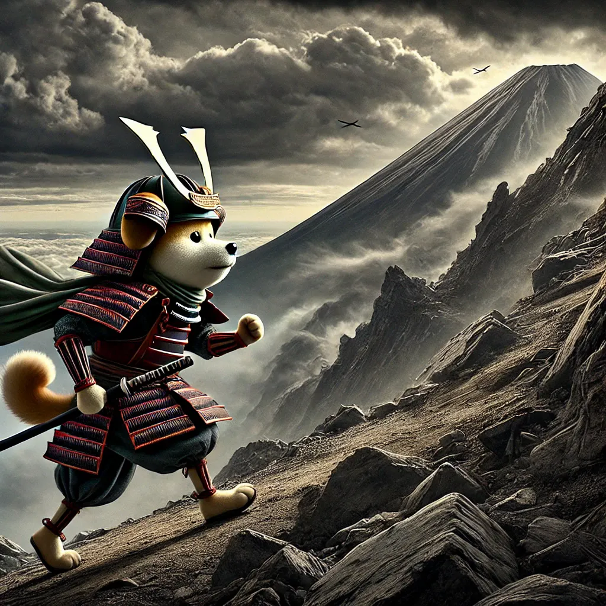

DoggySan


Discover the mystical journey of DoggySan, the Japanese doggy that ascends to Fujiyama.

Part 2: The Perilous Climb
As DoggySan ascended the mountain, the path became steeper and more treacherous. Dark clouds gathered, and the winds howled, as if the mountain itself were testing his resolve. But DoggySan, with his unwavering spirit, pressed on, each step bringing him closer to his destiny.